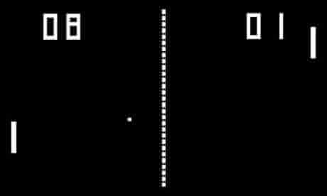

Youtube video found online. Credit is given to its original author
All content and copyrights are copied from worldhistoryproject.org and owned by its respective author(s)
1958: Tennis for Two was a game developed in 1958 on an analog computer, which simulates a game of tennis or ping pong on an oscilloscope. More Info
1972: Pong (marketed as PONG) is one of the earliest arcade video games, and is a tennis sports game featuring simple two-dimensional graphics. More Info
Source: theguardian.com
1979 Asteroids is a video arcade game released in 1979 by Atari Inc. More Info
1985: Super Mario Bros. is a platform video game developed by Nintendo in late 1985 and published for the Nintendo Entertainment System as a sequel to the 1983 game Mario Bros.. More Info
1987: Final Fantasy (ファイナルファンタジー, Fainaru Fantajī) is a console role-playing game created by Hironobu Sakaguchi, developed and published in Japan by Square (now Square Enix) in 1987, and published in North America by Nintendo of America in 1990. More Info
2004: World of Warcraft, often referred to as WoW, is a massively multiplayer online role-playing game (MMORPG) by Blizzard Entertainment. More Info
2006: The Nintendo DS Lite (ニンテンドーDS Lite, Nintendō Dī Esu Raito) is a dual-screen handheld game console developed and manufactured by Nintendo. More Info